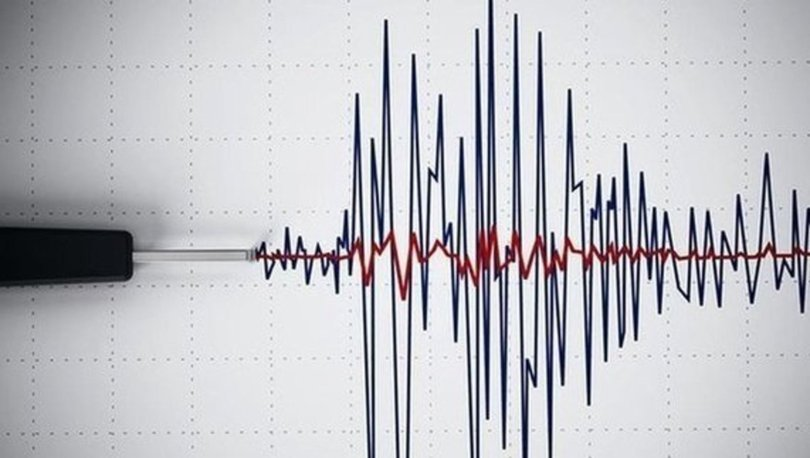

- Deprem ve etkileri
Dünya üzerindeki en yoğun deprem kuşağı Orta Asya bölgesinde görülür. Bu bölgedeki fay hareketliliği tüm kıtayı etkiler. Türkiye, Japonya ve Endonezya, depremin en çok görüldüğü Asya ülkeleridir. Depremlerin etkileri türlerine göre farklılık gösterir. En fazla can ve mal kaybına yol açan deprem türü tektonik depremlerdir. Toprağın altındaki konveksiyonel akımlardan dolayı oluşan depremin etki alanı geniştir. Volkanik depremler ise volkanların patlamasından sonucu oluşur. Etki alanı dar olup can ve mal kaybı çok azdır. Ülkemizde birçok volkanik dağ olsa da hiçbiri aktif değildir. Arazilerin zamanla erimeye başlaması çökme depremlere neden olur. Can ve mal kaybı volkanik depremlerden daha fazla olmasına rağmen etki alanı maden ocakları ve mağaralar ile sınırlıdır.
- Kuraklık ve Kıtlığın etkileri:
Kuraklık, yağışların yetersiz olduğu kırsal bölgelerde görülür. Toprak neminin düşmesi ile birlikte tarımsal üretim durur. Bazı tarım arazileri ise nehirlerle sulanır. Nehirlerin kuruması da doğrudan doğruya kuraklık nedeni olabilir. Kıtlık ise, kuraklığın doğal bir sonucudur. Kıtlığın görüldüğü ülkelerde yaşayanlar temel besin kaynaklarına ulaşamaz. Bölgede yüksek sayıda ölümler görülür. Bazı salgın hastalıklar ortaya çıkabilir. Kıtlık ve kuraklığın bir diğer nedeni ise aşırı nüfustur. Dünyanın en kalabalık ülkeleri olan Çin ve Hindistan'ın bazı bölgelerinde kıtlık yaşanmaktadır. Bunun nedeni kuraklık değil, gıda kaynaklarının yetersiz oluşudur. Kuraklık ve kıtlığın ekonomik etkileri çok fazladır. İnsanların başka ülkelere göç etmesine neden olduğu demografik etkileri de mevcuttur.
- Sel ve etkileri:
Brezilya, Amerika Birleşik Devleti, Çin ve Guatemala, sel felaketinin en çok görüldüğü ülkelerdir. Depremden sonra en fazla can ve mal kaybına yol açan doğal afettir. Taşkınlar, direkt olarak doğaya da zarar verir. Birçok ağacın devrilmesine ve toprak yapısının bozulmasına neden olabilir. Su taşkınlarının dolaylı etkileri de çok fazladır. Taşıma ve kanalizasyon sistemlerinin zarar görmesine neden olur. Bazı bölgelere sadece havadan ulaşım sağlanabilir. Elektrik çarpması ve kemirgenlerin çoğalması da su taşkınlarının dolaylı etkileri arasında görülür.
- Çığ ve etkileri:
Kar yağışının yoğun olduğu bölgelerde, eğimli arazilerde ortaya çıkan afetlere çığ denir. Etki alanı geniş olmasa da can ve mal kaybına yol açar. Yolların kapanmasına neden olduğu için ulaşımı olumsuz etkiler.
- Yangın ve etkileri: